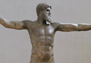
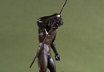
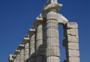
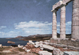
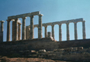

Poseidon
I would like finally to look at Poseidon, who is known in Latin as Neptune. Poseidon is a significant god in the pantheon, the brother of Zeus and one of the older of the 12 Olympian gods. His similarity to Zeus can be seen even in his appearance; he is always pictured as a god with a beard, older than Apollo or Hermes, and there are many statues from antiquity that could be representations of either Zeus or Poseidon. (see image 1) He does, however, have characteristics that are different from Zeus; he is often depicted as carrying a trident, and is of course associated with fish and other animals. (see Image 2). He is also, however, connected with the earth, and he can be responsible for earthquakes. When Zeus takes power as the father of the gods, control over the world is divided in three between Zeus and his brothers Hades and Poseidon. Hades receives the underworld, Poseidon the seas and also the land, while Zeus is the god of the heavens and supreme above all. Poseidon is often presented as an angry god, and he was a deity whom the Greeks worshipped in



order to protect them when they were sailing. In the maritime culture of the Greeks, it is obvious that Poseidon was an important god. An important sanctuary of the god was in Sounion, south of Athens. (see images 3-5)
One example in mythology of Poseidon’s anger is provided by the story of Odysseus and the Cyclops, told in the Homer’s Odyssey. As the well-known story goes, Odysseus in his travels comes to the home of the Cyclops Polyphemus, who is a brute and proceeds to eat his companions. In order to escape from his cave, Odysseus tricks the Cyclops into getting drunk andthen blinds him by driving a stake through his eye. The Cyclops Polyphemus, however, is the son of Poseidon, and Poseidon therefore becomes angry with Odysseus, and constantly drives him off course and keeps him from his home.
{kind=link}
{kind=link}
{kind=link}
{kind=link}
{kind=link}
The one Homeric Hymn which is addressed to Poseidon, number 22, also makes reference to his anger: ‘Concerning Poseidon, that mighty god, I begin to sing, who stirs the earth and murmuring sea, the lord of the deep, who over Helion rules and spacious Aigai too. In twain the gods divided, Shaker of Earth, your share of honour-to be the tamer of horses and saviour of ships. Farewell, Poseidon, Holder of Earth, whose hair is dark; Blessed One, kindly at heart, bring help to those who sail.’ Here we can see that Poseidon cannot simplistically be called just a god of the sea, as he also has control over earth, and also the taming of horses.
Poseidon is also important in Classical mythology because of the many children whom he sired. He is married to Amphitrite, one of the Nereids, the daughters of Nereus, son of the Sea (Pontus) and Earth (Ge). They have a son together who is named Triton, a merman. Amphitrite is in many senses a counterpart to Hera, for just like Zeus, Poseidon’s many affairs with women get him into trouble with his jealous wife Amphitrite. One story tells of how Poseidon falls in love with Scylla, the daughter of Hecate, a goddess with dark magical powers. The jealous Amphitrite puts magic herbs into Scylla’s bath and Scylla is transformed into a terrible monster, with a ring of dogs’ heads. This Scylla attacks Odysseus crew in Homer’s Odyssey. Poseidon is often associated with such terrible monsters. He is said also to be the lover of the terrible Medusa, whose hair is made of snakes and could turn those who looked at her to stone. Descended from Poseidon are also the Geryon, the Theban Sphinx and the Nemean Lion. His association with such beasts is representative of his role as a formidable and angry god.